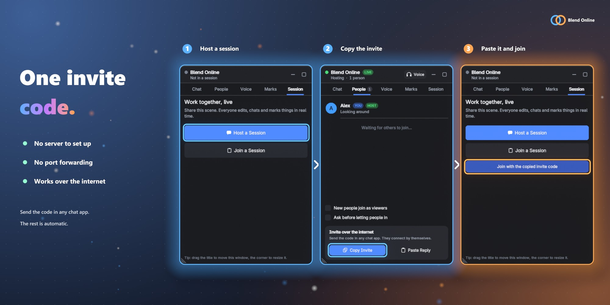
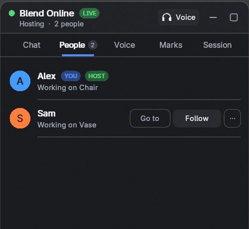
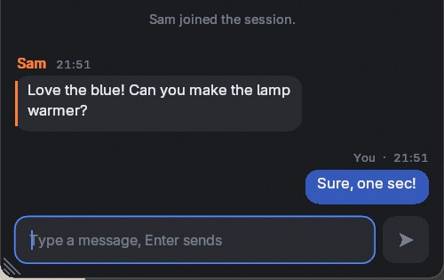
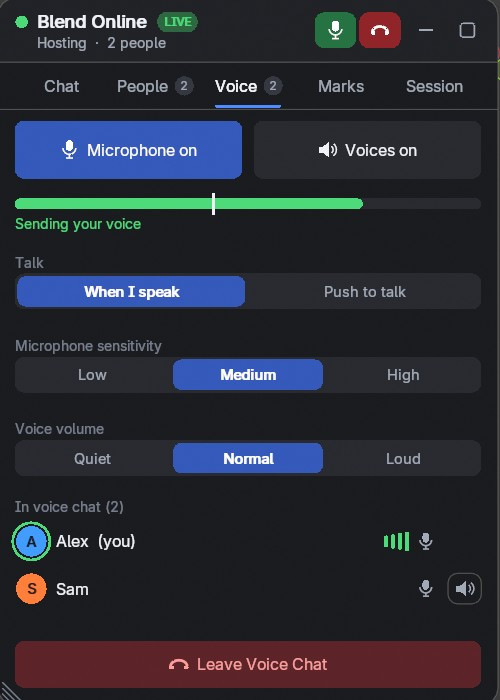
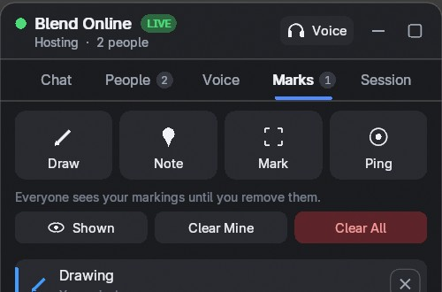
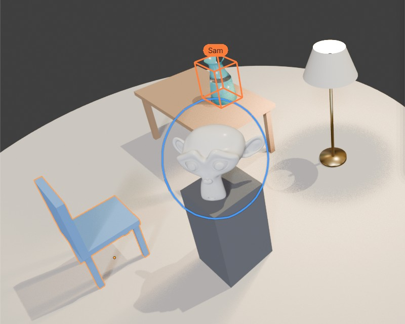

Everyone in a session needs the add-on installed, so send the zip to the people you work with. The 2 Users license covers you and one other person, the 8 Users license you and up to seven others. Both are the same add-on, and a session holds up to 8 people.
Different Blender versions can work together: 4.5 and 5.2 are tested connected to each other.

The window has five tabs: Chat, People, Voice, Marks and Session.
Hosting shares your current scene. Click Host a Session in the Session tab. The dialog has these settings:
| Setting | What it does |
|---|---|
| Port | The port used on your computer (default 7777). |
| Password | Optional. Everyone who joins must enter it. |
| Your Name | The name others see. |
| Allow Internet Joins | Creates an invite code so people anywhere can join over the internet. No server or router setup is needed. |
Windows may ask you to allow Blender through the firewall. End Session in the Session tab ends it for everyone. Opening another file or disabling the add-on also ends the session cleanly.
With an invite code on your clipboard, the Session tab shows Join with the copied invite code. Otherwise click Join a Session and choose:
BO-.The shared scene opens as a new scene in your file. Your other scenes are not changed. Leave Session in the Session tab disconnects you. If the host leaves, the session ends for everyone with a clear message.
With an invite code, the two computers find each other by themselves and connect directly. This works through most routers, including double NAT. If it takes long, try these in order:

The People tab shows everyone and what they work on.
In the 3D Viewport, each person's selection is a colored box with their name, and a marker shows where they are looking.

Type in the Chat tab and press Enter to send, Esc to stop typing. Ctrl+C and Ctrl+V work.

Open the Voice tab and click Join Voice Chat. The microphone opens only then. Use headphones, otherwise the others hear themselves through your microphone.
| Control | What it does |
|---|---|
| Microphone | Mutes you. |
| Voices | Turns everyone's voice off for you. |
| Talk | When I speak sends your voice when the meter passes the white line. Push to talk sends it while you hold Mouse Button 4. |
| Sensitivity | Lower it if noise gets sent. |
| Voice volume | How loud the others are. |
| Speaker icon | Mutes one person, only for you. |
Pick devices in the preferences (Microphone, Speakers).
Voice chat runs on Windows and Linux (PulseAudio, PipeWire or ALSA). It is not available on macOS: Blender has no microphone permission there, and macOS ends apps that open the microphone without one.

| Tool | What it does |
|---|---|
| Draw | Drag with the left mouse button to draw on the scene. Ctrl+Z removes your last line, right-click or Esc stops drawing. |
| Note | Pin a note to a spot. |
| Mark | Put corner brackets and a label on an object. |
| Ping | A temporary signal at a spot. Ctrl+Alt+P pings the point under the mouse. |
Markings stay until they are removed, in their author's color, and people who join later see them too. Use Shown to hide them, Clear Mine or Clear All to remove them.

The Timeline, Dope Sheet, Graph Editor and NLA draw a line and a name at every other person's current frame, with an arrow while they play. Following someone also follows their frame and plays along. Each person can stay on their own frame otherwise.
Edit > Preferences > Add-ons > Blend Online
| Setting | What it does |
|---|---|
| Your Name | The name others see. Empty uses your system user name. |
| Your Colour | Your color for selections and chat. The server picks another one if it is taken. |
| Host Port | The port used when you host. |
| Blend Online Window | Shows the floating window. |
| Sidebar Tab | Also shows Blend Online in the N panel. |
| Session Bar | Shows everyone's avatar at the top of the viewport. |
| Chat in Viewport | Shows new messages briefly at the bottom of the viewport. Message Time sets how long. |
| Chat Sound | Plays a short tone when a message arrives. |
| Connect Automatically | With an invite code, the person joining needs no reply code. See Network and privacy. Turn off to always exchange reply codes by hand. |
| Ask Before Letting People In | When you host, each person waits until you let them in. |
| Talk, Sensitivity, Volume | The defaults of the Voice tab. |
| Microphone, Speakers | Which audio devices voice chat uses. |
| Updates per Second | How often your changes are sent. Higher is smoother but uses more bandwidth. |
Change the shortcuts in Preferences > Keymap: Ping (3D View) and Push to Talk (Window).
A relay is the same session server without Blender. Everyone connects out to it, so nobody needs direct connections. Use it when direct connections fail.
blend_online_server.py.python3 blend_online_server.py --port 7777 --password YOUR_PASSWORDThe first person to join shares their current scene. People who join later receive it.
Address and relay connections are not encrypted. The password only controls who can join. Use a VPN for confidential work on those. Invite code connections are encrypted.
Your scene goes directly from computer to computer. It is not stored on any server of ours: there are none. To find each other over the internet, invite code connections use public services:
Turn Connect Automatically off to stop using ntfy and the DHT, for example on networks where BitTorrent traffic is not allowed. You then exchange reply codes by hand. Everyone with your invite code can join, so send it only to people you want in the session.
Turn on Allow Online Access in Edit > Preferences > System > Network.
Follow When it doesn't connect. Check that Windows allows Blender through the firewall.
Everyone needs a compatible version of the add-on. Update to the same version.
Check Windows Settings > Privacy > Microphone (desktop apps), or choose another microphone in the preferences.
Use headphones. Without them, your microphone picks up their voices from your speakers.
Set Microphone Sensitivity lower, or use Push to talk.
Check What is shared. A viewer's changes are put back, and changes from others wait while a tool is running.
It lives in the largest 3D Viewport of each workspace. Use the Blend Online button in the top bar to show it.